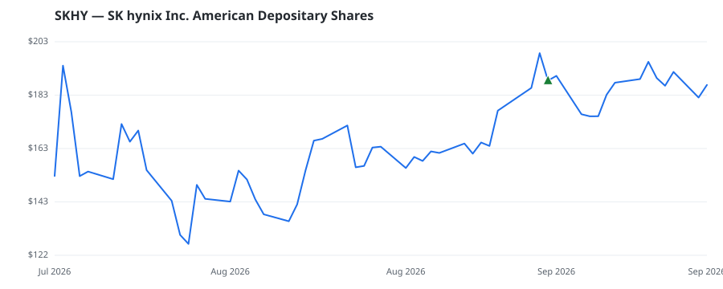

bullish · bearish · n/a — dots: price>SMA10 · SMA10>SMA50 · SMA50>SMA200 · up>down volume (20d)
Other · mega cap
Members who bought SKHY earned a dollar-weighted -0.9% from their disclosure dates, versus +0.8% for the S&P 500 over the same holding windows (-1.7% alpha).

▲ green = a disclosed purchase · ▼ red = a disclosed sale (plotted on disclosure date)
SK Hynix is a semiconductor memory manufacturer with around 60%-70% of its revenue from DRAM and 30%-35% of its revenue from NAND. The company is both the second-largest DRAM and NAND supplier globally, with a 33% and 21% market share, respectively, as of 2024. SK Hynix increased its market position in NAND from fourth to second, after acquiring Intel's NAND business in 2021. SK Square, an investment management company spun off from SK Telecom, is SK Hynix's largest shareholder and currently holds 20% of the company's shares. · website
| Member | Chamber | Out-performer | Disclosed buys $ | Return on buys |
|---|---|---|---|---|
| Gilbert Cisneros | house | — | $8K | -0.9% |
Disclosed $ figures are bracket midpoints — filings report ranges (e.g. $1,001–$15,000), not exact amounts.